Se define el Revenue Management, de creciente aplicación al mundo hotelero, como el hecho de vender la habitación adecuada, al cliente adecuado, al precio adecuado, en el momento adecuado y a través del canal de distribución adecuado.
Por lo tanto, si se traslada al sector turístico en general, se dirá que el Revenue Management consiste en vender el servicio adecuado, al cliente adecuado, al precio adecuado, en el momento adecuado y a través del canal adecuado.
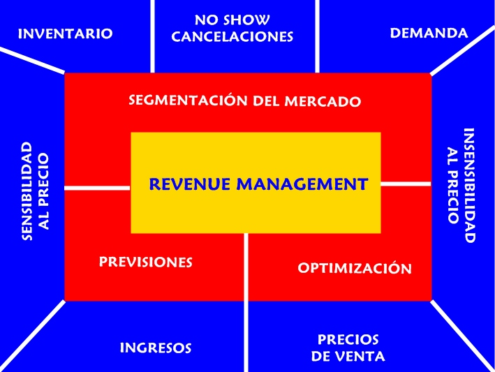
La definición clásica de Revenue Management sostiene que es el arte de “vender el producto correcto, al cliente correcto, en el momento correcto”.
Realmente, no se puede decir que el Revenue Management sea una herramienta de gestión de la calidad, pero debido al gran número de índices, es decir, indicadores, que ofrece su aplicación al modelo de gestión hotelera, es un generador de tanta información, y es de tanto valor, que merece la pena que sea estudiado en este momento.
Pero la realidad es que el Revenue Management trata de poner en el mercado la cantidad de producto adecuada, al precio adecuado y en el momento adecuado.
Para su estudio se emplean indicadores. No se trata de un capricho, sino de conocer, de obtener información con la cual proceder a la toma de decisiones. Por ejemplo, mediante el estudio de los datos históricos y el comportamiento de la competencia podemos adoptar una adecuada política de precios basada en la paridad tarifaria u otras políticas similares que nos permitan dos cosas: optimizar la ocupación e incrementar los beneficios.
A continuación se muestran algunos de los índices del Revenue Management, aplicados al sector de la hotelería.
ADR
(Average Daily Rate) Se traduce por tarifa media diaria. Podemos encontrarlo también representado como ARR (Average Room Rate) o tarifa media por habitación.
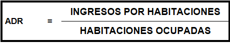
ÍNDICE DE OCUPACIÓN - OC % -
Se trata del porcentaje de ocupación. De hecho se suele representar acompañado de este símbolo.
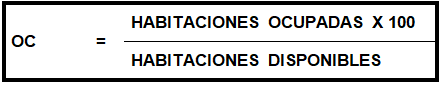
RevPar
Es el índice más asemejable al Yield. De hecho, muchos autores identifican el Revenue Management con el Yield Management. Se interpreta este índice como la relación entre los ingresos por habitaciones y las habitaciones disponibles. Su significado es Revenue per available room, o lo que es lo mismo, ingresos por habitación disponible.
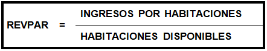
ROOM REVENUE (RM)
Realmente son los ingresos por venta de habitaciones.
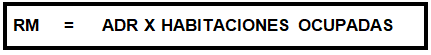
TrevPar
Es el índice que responde a Total Revenue per Available Room. Se traduce como ingresos totales por habitación disponible.
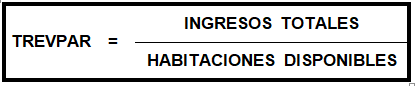
GopPar
Responde a Gross Operating Profit Per Available Room. Es, por tanto, el beneficio por habitación disponible. En este caso, se computan los costes departamentales y los costes funcionales, tal y como se expresa en el modelo USALI.
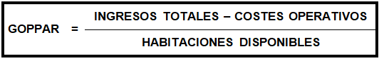
A partir de estos datos, se pueden confeccionar otros índices que ofrecen información interesante. En primer lugar, diremos que el uso del GopPar y del TrevPar pueden parecer poco indicativos, al realizarse exclusivamente sobre la totalidad de habitaciones del establecimiento, estén ocupadas o no. Sin embargo, estos dos índices pueden trasladarse al concepto de habitación ocupada.
ÍNDICE DE FRECUENCIA (IF)
También se le conoce como “índice de frecuentación”, y en el mundo hotelero se emplea para reconocer cuál es el nivel de uso de cada una de las unidades de alojamiento. El más representativo es saber cuál es el número de personas que, como media, se alojan en cada una de nuestras unidades de alojamiento. Se formula así:
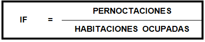
PERNOCTACIONES
Reconocemos como pernoctaciones al número de personas que se alojan en un establecimiento, y las que facilitamos una noche de hotel, y solamente una noche. Así, si una persona permanece en un establecimiento hotelero durante 5 noches, aún a pesar de ser una única persona, realiza un total de cinco pernoctaciones. De acuerdo con la fórmula anterior, podemos establecer una para este ÍNDICE.
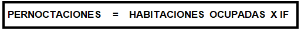
ESTANCIA MEDIA (EM)
Nos referiremos a ella como EM, y la empleamos para referirnos al tiempo que, como media, permanecen nuestros clientes, alojados en nuestro establecimiento. Para formularlo empleamos una sencilla relación entre las habitaciones ocupadas y las personas que pasan por nuestra Recepción, para realizar el check in. Sin embargo, en el ámbito presupuestario, sobre todo, podemos darle una gran utilidad, permitiendo calcular el número de habitaciones de cliente o de salida que facilitamos, teniendo en cuenta que su coste variable es claramente diferente, ante la diferencia de procedimiento de ejecución.
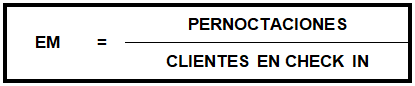
Pero el Revenue nunca termina de obtener información, y puede ser aplicado a muchos sectores productivos y a muchos departamentos de los establecimientos turísticos. Por ejemplo, podríamos establecer, y de hecho se establecen, índices relacionados con el número de clientes potenciales y alojados, con el número de asientos en un restaurante, con las plazas en salones para eventos, con las butacas de un cine, etc…
Pero lo importante, no solamente es obtener todos estos índices, sino saber qué debemos hacer con ellos. El hecho de analizar y aplicar la información contenida en estos índices nos lleva a obtener una información muy valiosa, con la cual tomar decisiones. También nos aporta escenarios muy diferentes, que nos llevan a hacernos preguntas diversas:
¿Qué prefiero? ¿Obtener un fantástico ADR, contra un RevPar bajo? Eso indicaría que tengo una ocupación baja, pero en cambio, cada venta que hago consigo unos buenos ingresos.
De hecho, es habitual la existencia de alguna controversia al respecto. Se puede gozar de un ADR elevado, pero no se obtiene una buena cantidad de ventas, lo que provoca un Revpar muy limitado, que es síntoma de una baja ocupación.
Como consejo, y sin perder de vista el carácter subjetivo que puede tener esta observación, sería preferible lograr una conciliación óptima entre ambos índices, sin negar que la mejor de las situaciones, es aquella en la que ambos se aproximan. Si lo quisiésemos explicar desde el punto de vista de la calidad, diríamos que cuanto más se aproximen ambos índices, más estaríamos acertando con el precio que el cliente está dispuesto a satisfacernos, lo que provoca un aumento de la ocupación, reduciendo el número de habitaciones libres y, en consecuencia, conseguimos llegar a mayor cantidad de clientes.
Veamos el gráfico.
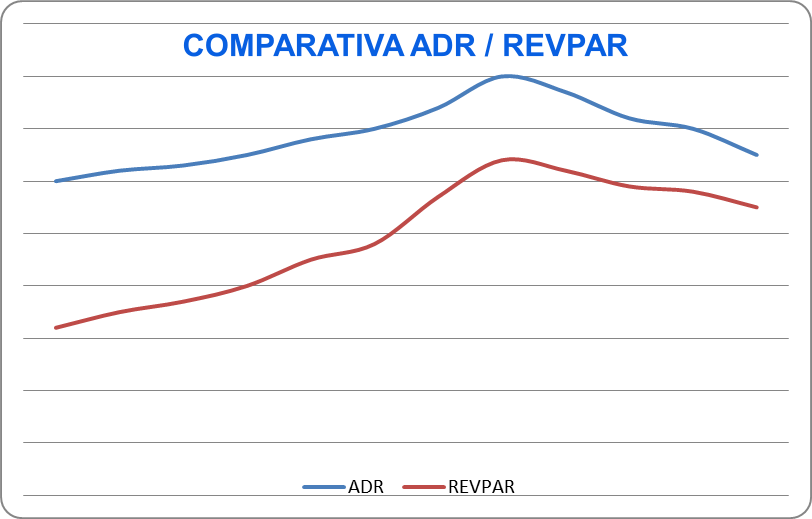
¿Qué prefiero? ¿Obtener un TrevPar limitado, aunque un buen RevPar? Con estos datos así formulados, deduzco que mi ocupación es buena, pero mis clientes ajustan bastante su gasto en servicios extra respecto al alojamiento. Incluso, si analizamos el TrevPor, un índice de escaso estudio, todavía podemos aumentar la calidad de esa información.
¿Y nuestro GopPar y GopPor? Este último casi no se estudia, porque el objetivo del Revenue es conseguir maximizar la ocupación. Sin embargo es muy interesante.